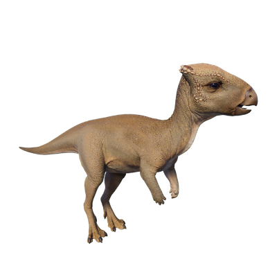

Useful Website
Notable for its distinctive flat skull (its name translates to ‘even head’), Homalocephale is a small, herbivorous dinosaur that grows to around 2.3m in length and around 45kg in weight. This genus has excellent eyesight and long legs that help it to locate and escape predators, while its thick, flat skull and wide pelvis protect it from attack.
